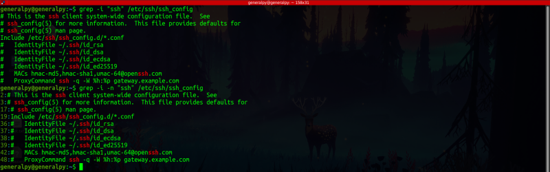
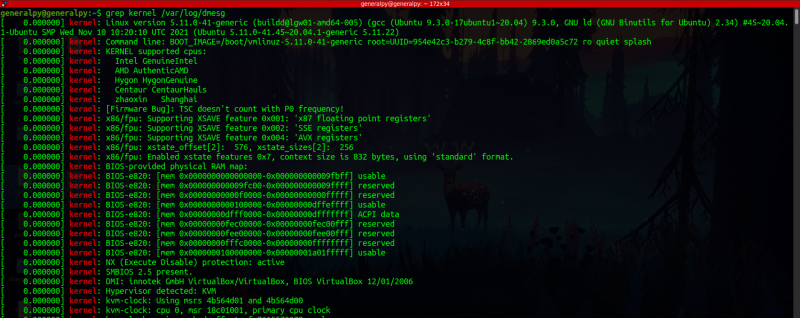
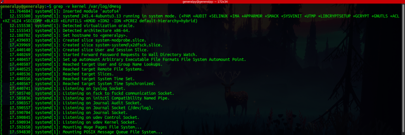
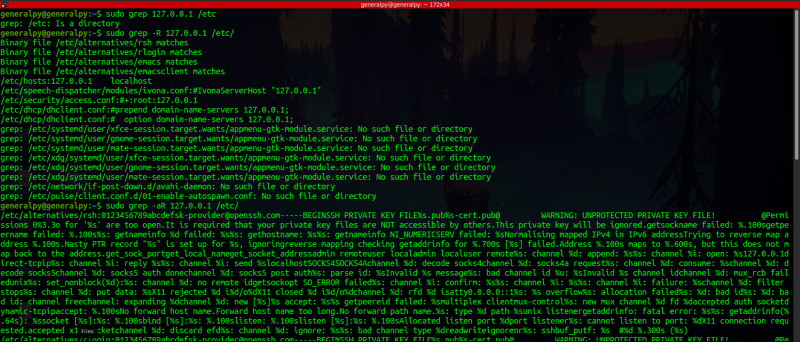
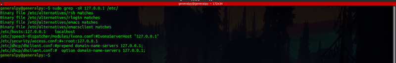
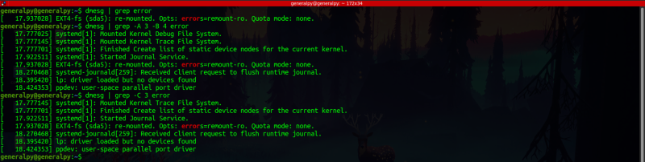

grep is a text searching utility created by Ken Thompson. We can use it to search for text in any file or search in output of any commad using pipes. grep is a very useful and must know tool.
Simple usage of grep is :
grep text_to_search file_to_search_inTo find space separated string we have to provide argument in quotes.
We can use -i flag to do case insensitive matching.
We can use -n flag to get number of lines printed with grep output.

Without any flag grep will match partial word too, eg if we grep for body, nobody will also be matched. We can remove this behaviour by using -w flag.
We can use -v flag to inverse search. In inverse search, all matches which don't have the query are returned. For example if we search for kernel with -v flag we will get all lines which don't have the word kernel.


To search for string in binary files we have to add -a option.
We cannot search in directories . We can use -R flag with grep which will search in files inside the directories.

To suppress error messages about non existing files use -s flag.

We can use -c flag which gives count of matches by grep. It gives number of lines matched by grep as output. It performs same function as wc -l.
We can pipe output of other commands to grep.
We can use -A flag to give n number of lines after the match. -B flag is used to give n number of lines before the match. We can use -C flag to get n number of lines before and after the match.

There are some files which have binary data but that data is in printable ascii format. We read that data using strings command.
Contents of ls which is a binary file.